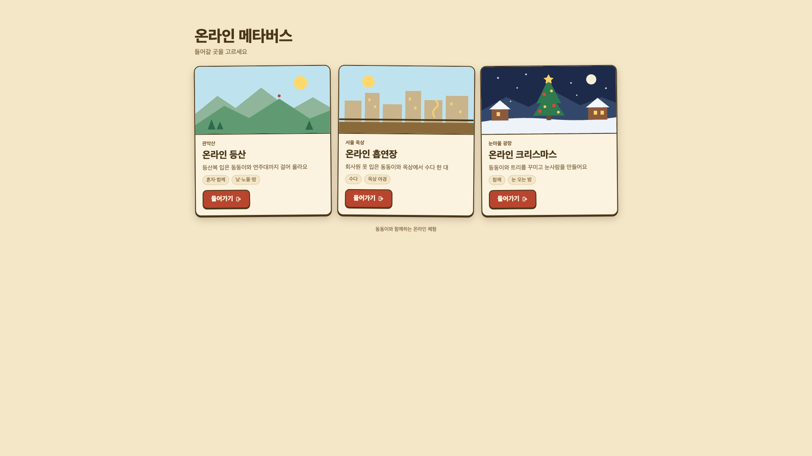
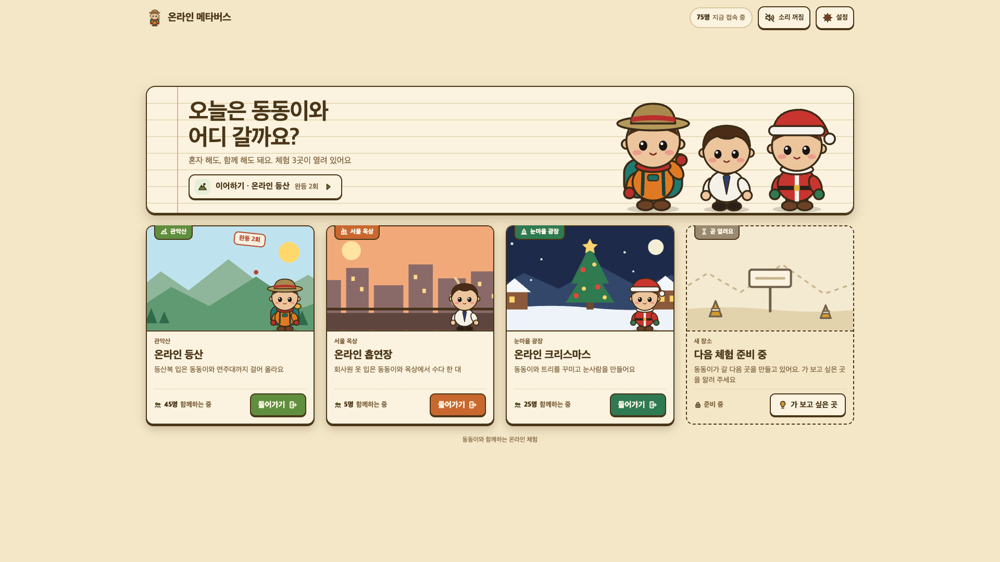
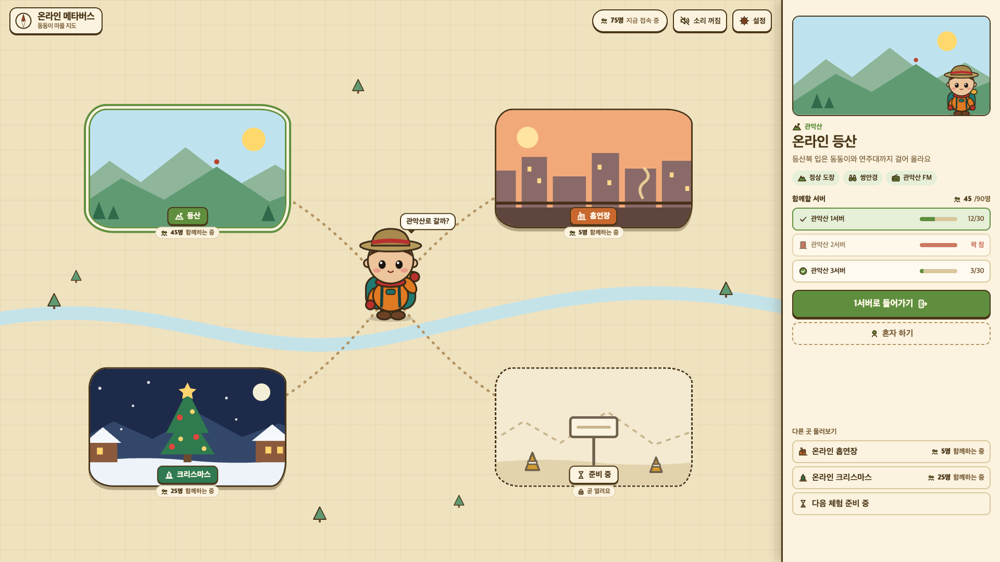
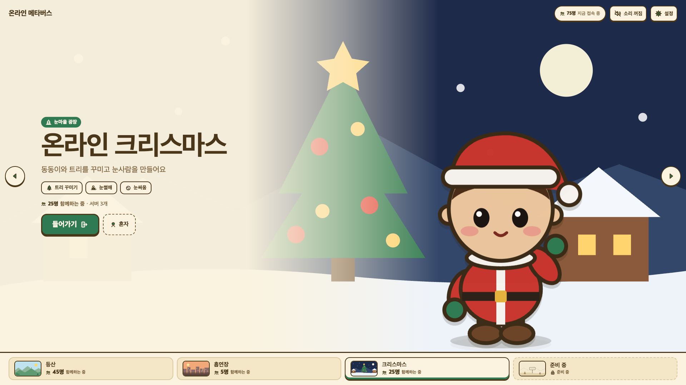

<body style="margin:0;background:#2b2418;font-family:'Apple SD Gothic Neo';color:#f4e7c8;padding:16px;display:grid;grid-template-columns:1fr 1fr;gap:14px;width:1868px">
<figure style="margin:0"><figcaption style="font:800 22px sans-serif;margin:0 0 6px">지금 허브</figcaption></figure>
<figure style="margin:0"><figcaption style="font:800 22px sans-serif;margin:0 0 6px">시안 A · 수첩 책갈피 카드 (추천)</figcaption></figure>
<figure style="margin:0"><figcaption style="font:800 22px sans-serif;margin:0 0 6px">시안 B · 동동이 마을 지도</figcaption></figure>
<figure style="margin:0"><figcaption style="font:800 22px sans-serif;margin:0 0 6px">시안 C · 큰 무대 넘기기</figcaption></figure>
</body>
